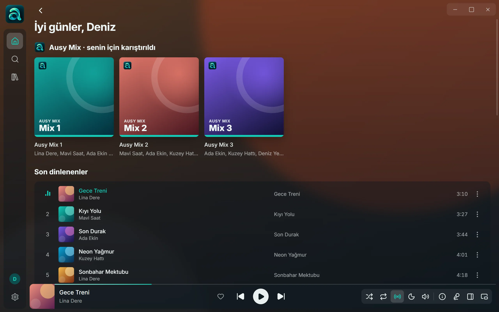
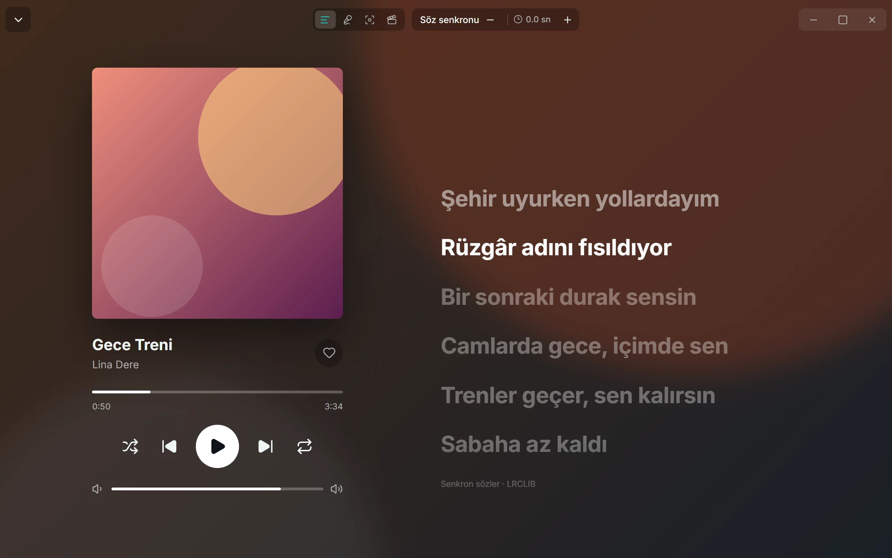

Sözler şarkıyla akar
Senkron sözleri satır satır izle, bir satıra dokunup oraya atla. Klasik, Karaoke, Odak ve Sinema görünümleri arasından seç.
Windows için ücretsiz
Milyonlarca şarkı, satır satır akan sözler ve dinledikçe sana göre şekillenen Ausy Mix'ler. Hepsi tek, sade bir uygulamada.

Senkron sözleri satır satır izle, bir satıra dokunup oraya atla. Klasik, Karaoke, Odak ve Sinema görünümleri arasından seç.
Dinledikçe sana özel karışımlar hazırlanır. Beğendiğini tek dokunuşla listene kaydet.
Başka bir uygulamaya geçtiğinde ekranın üstünde belirir, üzerine gelince açılır. İstersen her zaman üstte duran mini oynatıcıya geç.
Bir çalma listesi linki yapıştır, şarkılar kütüphanene gelsin. Sürükleyip sırala, kapağını seç.
Şarkı, albüm ve listeleri indir. Bilgisayarındaki müzik klasörlerini de aynı yerde çal.
Profilini oluştur, istediğin listeleri paylaş. Listelerin sen açmadıkça gizli kalır.
Kütüphanen hesabınla eşitlenir, uygulama yeni sürümleri müzik çalmıyorken kendisi kurar.

Üzerinde çalışıyoruz. Hazır olunca buradan indirebileceksin.
YakındaEvet. Ücretsiz bir hesap açman yeterli.
Uygulamanın henüz ticari kod imzası yok, bu yüzden SmartScreen uyarabilir. "Ek bilgi" ve ardından "Yine de çalıştır" ile devam edebilirsin. Güncellemeler ise uygulama tarafından imzası doğrulanarak kurulur.
Beğenilerin, listelerin ve ayarların cihazlar arasında eşitlensin diye. E-postan profilinde görünmez.
Geliştirme sürüyor. Çıktığında bu sayfadan duyuracağız.